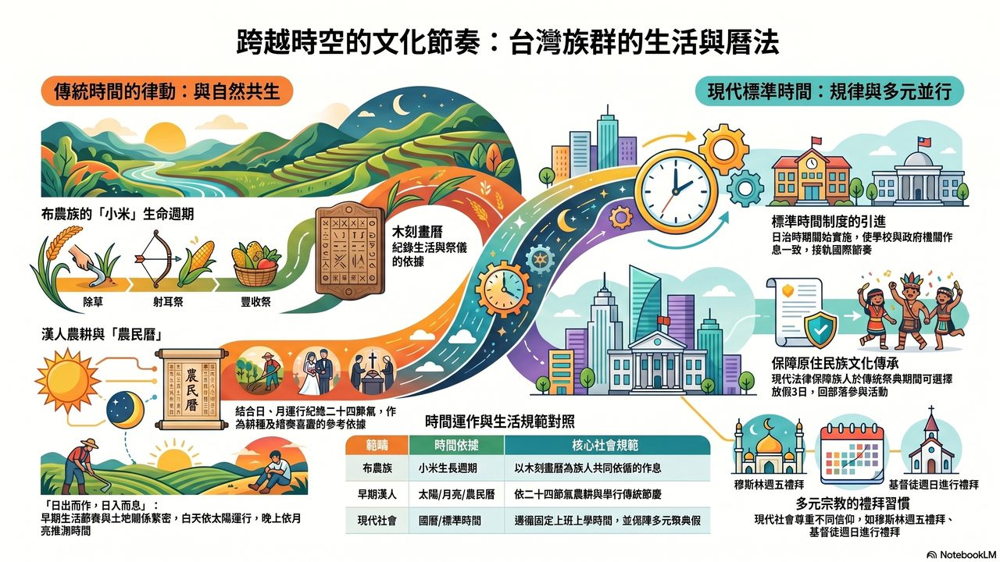

← 社會科首頁
📚 CH4_2 教學駕駛艙
各族群生活方式如何形成文化？· 國小社會五年級下 · 第四單元第二課
🏫 回社會科首頁
🖼️ 教學簡報輪播
‹
›
1 / —
▶ 自動播放
← → 鍵或點選切換
🎬 教學影片
🎬
4-2 情緒雲霄飛車：臺灣的民主之路
NotebookLM AI 生成教學影片
您的瀏覽器不支援 HTML5 影片。
🔊
4-2 二二八戒嚴與曆法必考重點
NotebookLM AI 生成複習語音
您的瀏覽器不支援 HTML5 音訊。
🎙️ 補教名師風格複習語音：課程重點整理、是非題練習、關鍵字解析。適合課前暖身或課後複習。
📊 教學資訊圖表

🎮 形成性評量小遊戲
重點 01
曆法的發展
早期人們找出時間規律、陽曆與陰曆的差異。
🔵 選擇題
5 題
▶ 開始挑戰
重點 02
布農族木刻畫曆與三大祭典
除草祭、射耳祭、豐收祭與木刻畫曆的功能。
🔴 配對題
5 組
▶ 開始挑戰
重點 03
農民曆的內容與用途
二十四節氣、忌宜，農業與日常生活應用。
🟢 是非題
6 題
▶ 開始挑戰
重點 04
漢人農業社會的生活作息
日出而作日入而息、打更制度與廟會文化。
🟠 填充題
5 題
▶ 開始挑戰
重點 05
現代標準時間的引進
日治時期引進標準時間、民國紀年的延續。
🔵 選擇題
5 題
▶ 開始挑戰
重點 06
多元族群文化的保障
原住民放假3日、各宗教禮拜傳統、勞動節。
🟣 配對題
5 組
▶ 開始挑戰
📲 掃碼開玩